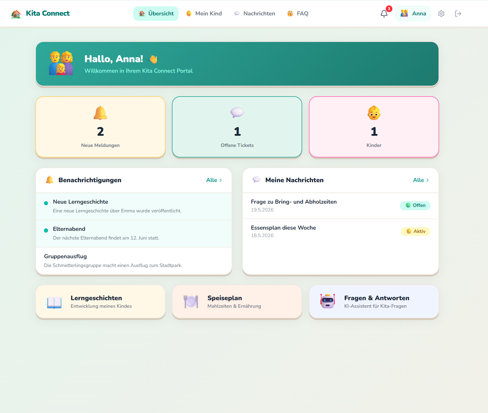
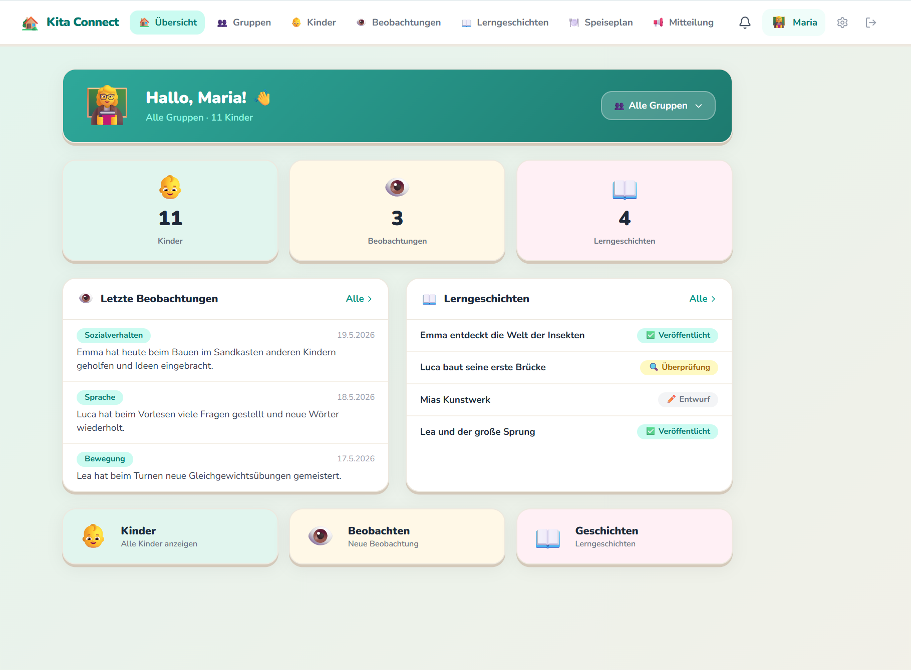
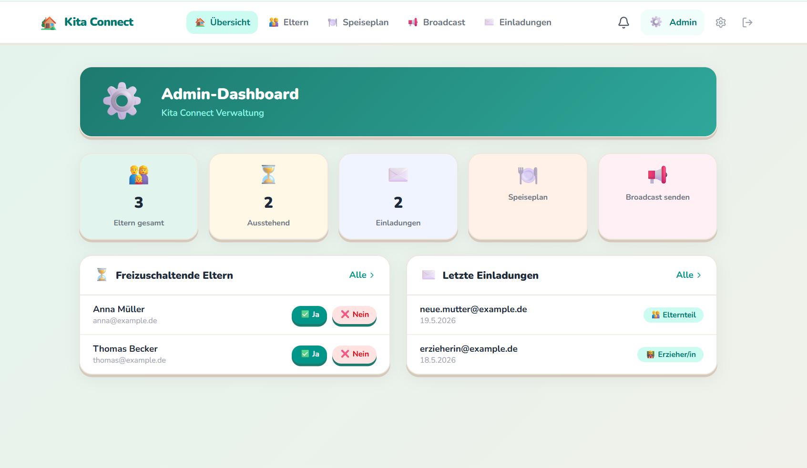

German Kitas rely on WhatsApp, paper forms, and phone calls for daily communication and child documentation — none of which are GDPR-compliant for child data.
A unified, role-based portal for parents, educators, and management with automated workflows, AI-assisted documentation, and multi-channel communication.
| Layer | Service | Region |
|---|---|---|
| Frontend | Next.js (App Router) | EU · Vercel Frankfurt |
| Database + Auth | Supabase (PostgreSQL + RLS) | EU · Ireland |
| Automation | n8n (German company) | EU · Germany |
| Resend SMTP | EU · Ireland SES | |
| SMS | seven.io (German company) | EU · Germany |
| Broadcast | Telegram Bot API | US · no personal data |
| AI | Claude Haiku (Anthropic) | US · pseudonymized |
Art. 28 GDPR requires a signed Data Processing Agreement with every third-party processor.
| Provider | DPA Available? | Status |
|---|---|---|
| Supabase | Yes — in dashboard | Not signed |
| Vercel | Yes — in dashboard | Not signed |
| n8n | Yes — on request | Not signed |
| seven.io | Available | Not reviewed |
| Anthropic | US — needs SCCs | Critical |



| Route | Purpose |
|---|---|
| /parent | Dashboard — notifications, open tickets, quick actions |
| /parent/child | Child profile — learning stories, milestones |
| /parent/tickets | Support ticket inbox (open / in progress / closed) |
| /parent/tickets/new | New ticket form |
| /parent/tickets/[id] | Ticket thread — parent-teacher conversation |
| /parent/notifications | Full notification inbox with read/unread |
| /parent/meals | Weekly meal plan + child eating feedback from teacher |
| /parent/faq | AI chatbot — Kita questions answered instantly |
| /parent/settings | Notification preferences (Email / SMS) |
Teachers log how each child ate (😄 alles aufgegessen / 🙂 gut / 😐 wenig / 😕 nicht gemocht) with optional notes. Parents see this per day in their meal plan view. Bridges the gap between Kita day and home.
Replaces WhatsApp for parent-teacher communication. Full thread view, status tracking, and email notifications on every reply — all GDPR-compliant.
Cache-first Claude Haiku chatbot. Answers common Kita questions without involving staff. Most answers served from DB cache — near-zero API cost.
| Route | Purpose |
|---|---|
| /teacher | Dashboard — group filter, observations, stories, quick actions |
| /teacher/children | All children list with search + group filter |
| /teacher/children/[id] | Child detail — observations, milestones, learning stories |
| /teacher/groups | Group management — create groups, assign children |
| /teacher/observations | Observation list + new observation entry |
| /teacher/observations/new | New observation form (category, situation, child) |
| /teacher/stories | Learning story list (draft / review / published) |
| /teacher/meals | Weekly meal plan view + per-child eating feedback entry |
| /teacher/broadcast | Send Kita-wide announcements (multi-channel) |
| /teacher/settings | Notification preferences |
Teacher dashboard has a group dropdown (Alle Gruppen / Schmetterlinge 🦋 / Bienen 🐝 / Sonnenkäfer 🐞). Stats, observations, and stories all filter to the selected group — no information overload.
Teachers can create groups, drag/assign children, and remove them. Unassigned children are highlighted. Changes save to Supabase. Solves the annual group reshuffle problem.
Teacher selects a child, enters the observation context. n8n picks up the webhook, pseudonymizes the child name, sends to Claude Haiku, and saves the draft. Teacher reviews and publishes.
| Route | Purpose |
|---|---|
| /admin | Dashboard — pending approvals, recent invitations, quick stats |
| /admin/parents | All parent accounts — approve / reject / suspend |
| /admin/invitations | Send invitations to parents and staff via email |
| /admin/broadcast | Send Kita-wide broadcast (In-App + Email + SMS + Telegram) |
| /admin/meals | Weekly meal plan editor — dish, macros, vitamins, allergens |
| /admin/settings | Kita-wide settings — opening hours, contact info |
New parents register via magic link invitation. They land in pending status. Admin sees them in the dashboard and approves or rejects — triggering n8n Workflow 08 which emails the parent and activates/suspends their account.
Admin edits the weekly meal plan (dish name, kcal, protein, carbs, fat, vitamins, allergens) per day. The same data is read by the parent and teacher meal plan views. Nutrition score calculated per DGE children's reference values (Richtwerte für Kinder 4–6 Jahre).
| Role | What they see / can do |
|---|---|
| Admin | Edit full meal plan — dish, macros, vitamins, allergens |
| Teacher | View meal + log per-child eating feedback with optional notes |
| Parent | View meal + see their child's eating feedback from teacher |
Feedback options: 😄 Alles aufgegessen · 🙂 Gut gegessen · 😐 Wenig gegessen · 😕 Nicht gemocht — with an optional text note per child.
Based on DGE Qualitätsstandard für Verpflegung in Tageseinrichtungen für Kinder — the official German standard for Kita catering. Not the EU Nutriscore (designed for packaged products, not hot meals).
| Nutrient | DGE Target | Score Weight |
|---|---|---|
| Energy (kcal) | 530–600 kcal | 30 pts (in range) / 10 pts (out) |
| Protein | ≥ 15g (ideal 40g) | up to 35 pts |
| Vitamins / nutrients | 3–4 listed | up to 35 pts |
"Richtwerte basieren auf dem DGE-Qualitätsstandard für Kita-Verpflegung. Dies ist keine medizinische Ernährungsberatung."
Each meal lists EU-regulated allergens (Gluten, Milch, Ei, Fisch etc.) as warning badges. Parents with allergic children see them prominently.
When a teacher replies to a parent's support ticket, the parent is automatically notified via in-app and email.
ticket_id · parent_id · child_id · title · reply_body
Admin or teacher sends a Kita-wide message. Each parent receives it on their preferred channels — in-app always, email/SMS/Telegram only if opted in or subscribed.
When a new parent completes registration, they receive a branded welcome email and an in-app notification.
The 2-second delay ensures Supabase Auth has finished creating the user before the workflow tries to write the notification.
When a teacher logs a child development observation, the parent is notified in-app. No email — details stay private until reviewed by the educator.
Educators describe a child observation in plain text. Claude Haiku generates a warm, child-addressed Lerngeschichte draft in the New Zealand Learning Stories style (150–250 words, Du-Form).
The educator then reviews, replaces the pseudonym with the real name, and publishes the story.
Real child names never leave the EU database. Only the pseudonym is sent to the Anthropic API.
Kind-A1B2) stored in ai_pseudonym_mapAnthropic is a US company. Pseudonymization is the primary technical protection. A DPA + Standard Contractual Clauses (SCCs) must be signed before production launch.
Parents and educators can ask Kita-related questions in natural language. Answers are cached — most questions never hit the Claude API, keeping costs near zero.
Only the first time a question is asked does it hit the Claude API. Every repeat question is served from the faq_cache table for free. The hit_count field tracks which questions are most popular.
No personal data is included in FAQ prompts. Claude is only told the question text — never the user's name, child's name, or any identifying information.
The system prompt restricts Claude to general Kita topics only. If a question is too specific (e.g. exact opening hours), Claude replies: "Bitte wende dich direkt ans Kita-Team."
When a parent or staff member is invited, the correct onboarding email is sent automatically based on their role.
Admin approves or rejects a pending parent account. The parent is immediately notified by email either way.
| Phase | Description | Status |
|---|---|---|
| 0 | DB Schema, RLS, Prototypes | Complete |
| 1 | n8n Automation (8 workflows) | Complete |
| 2 | Next.js Frontend — all role portals | In Progress |
| 3 | Supabase integration (live data) | Planned |
| 4 | i18n DE / EN / RU, Polish & Pilot | Planned |
| 5 | Mobile App (React Native / PWA) | Planned |